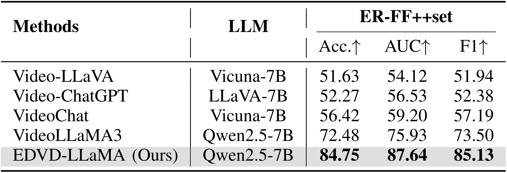
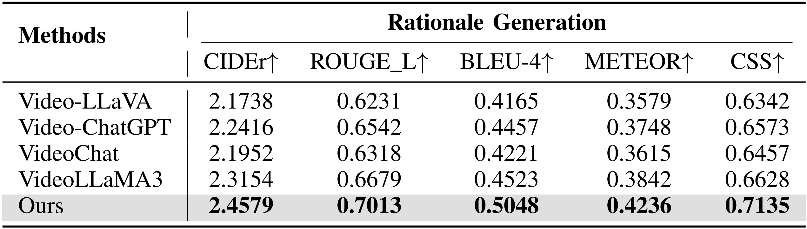
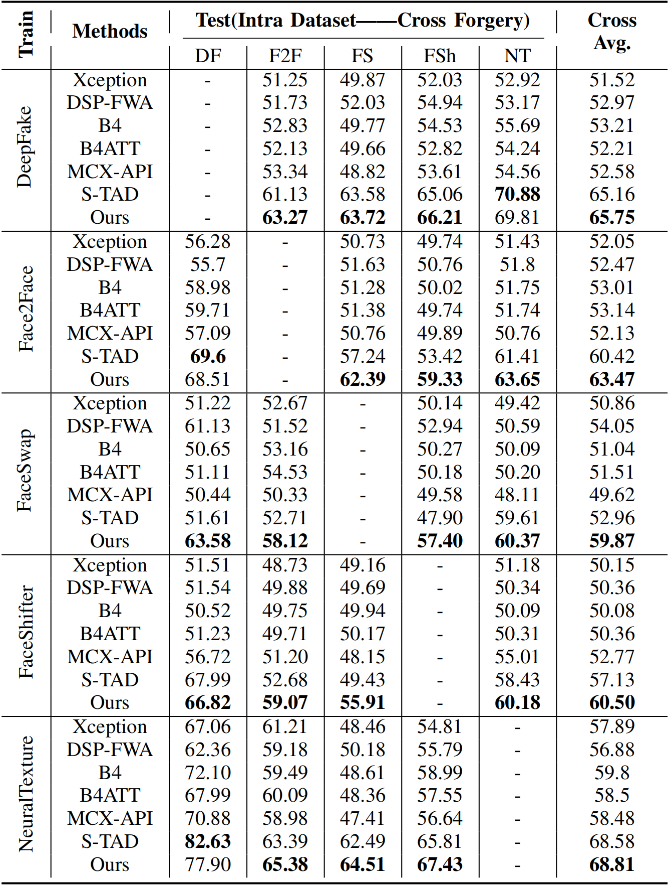
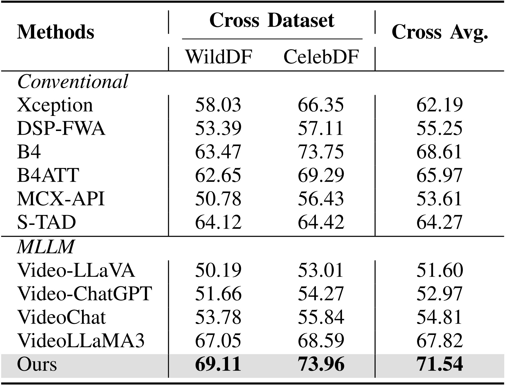

Abstract
The rapid development of deepfake video technology has not only facilitated artistic creation but also made it easier to spread misinformation, which is increasingly difficult to identify. Traditional deepfake video detection (DVD) methods face issues such as a lack of transparency in their principles and insufficient generalization capabilities to cope with evolving forgery techniques. This highlights an urgent need for detectors that can identify forged content and provide verifiable reasoning explanations. This paper proposes the explainable deepfake video detection (EDVD) task and designs the EDVD-LLaMA multimodal, a large language model (MLLM) reasoning framework, which provides traceable reasoning processes alongside accurate detection results and trustworthy explanations. Our approach first incorporates a Spatio-Temporal Subtle Information Tokenization (ST-SIT) to extract and fuse global and local cross-frame deepfake features, providing rich spatio-temporal semantic information input for MLLM reasoning. Second, we construct a Fine-grained Multimodal Chain-of-Thought (Fg-MCoT) mechanism, which introduces facial feature data as hard constraints during the reasoning process to achieve pixel-level spatio-temporal video localization, suppress hallucinated outputs, and enhance the reliability of the chain of thought. In addition, we build an Explainable Reasoning FF++ benchmark dataset (ER-FF++set), leveraging structured data to annotate videos and ensure quality control, thereby supporting dual supervision for reasoning and detection. Extensive experiments demonstrate that EDVD-LLaMA achieves outstanding performance and robustness in terms of detection accuracy, explainability, and its ability to handle cross-forgery methods and cross-dataset scenarios. Compared to previous DVD methods, it provides a more explainable and superior solution.
Comparison with MLLMs
Detection Performance
Our EDVD-LLaMA achieves state-of-the-art performance on the ER-FF++set, surpassing other representative MLLMs by a significant margin.
Explainable Capabilities
Our EDVD-LLaMA excels in generating accurate and coherent rationales for its detection decisions, consistently achieving the highest scores across standard text generation metrics.
Generalization Performance Cross Forgery Methods and Datasets
Generalization Cross-Forgery
Our EDVD-LLaMA exhibits superior transfer capability in cross-forgery scenarios, consistently achieving the best average performance even when detecting manipulation techniques not encountered during training.
Robustness Cross-Dataset
Our EDVD-LLaMA demonstrates exceptional adaptability to unseen data distributions, significantly outperforming state-of-the-art methods on external benchmarks like WildDF and CelebDF.
Qualitative Results
We visualize several qualitative comparisons between EDVD-LLaMA and other baseline models on the ER-FF++set, illustrating their respective responses to both deepfake and real videos.
Acknowledgment
The research work was conducted in the JC STEM Lab of Machine Learning and Computer Vision funded by The Hong Kong Jockey Club Charities Trust.
BibTeX
@misc{sun2025edvdllamaexplainabledeepfakevideo,
title={EDVD-LLaMA: Explainable Deepfake Video Detection via Multimodal Large Language Model Reasoning},
author={Haoran Sun and Chen Cai and Huiping Zhuang and Kong Aik Lee and Lap-Pui Chau and Yi Wang},
year={2025},
eprint={2510.16442},
archivePrefix={arXiv},
primaryClass={cs.CV},
url={https://arxiv.org/abs/2510.16442},
}